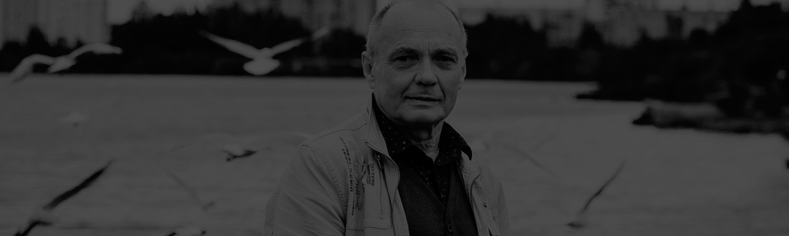
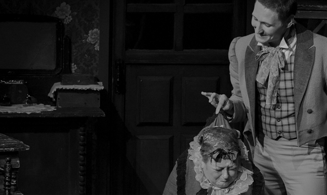
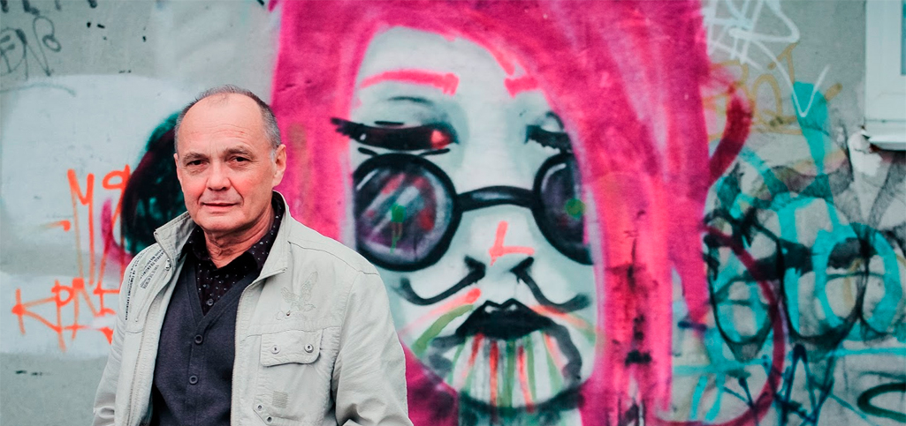
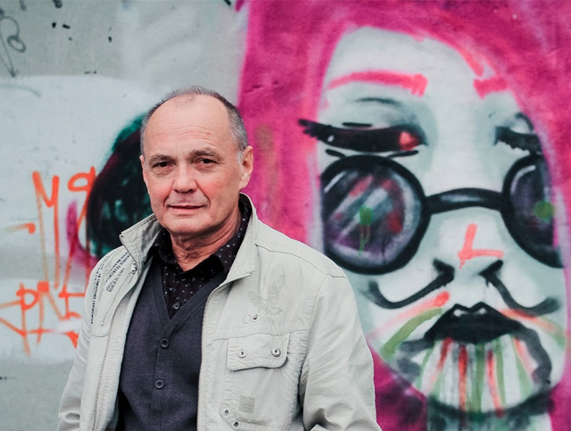

<!DOCTYPE html>
<html lang="ru">
  <head>
    <title>Dram actor</title><!-- saved from url=(0014)about:internet -->
    <meta charset="utf-8"/>
    <meta name="viewport" content="width=device-width, initial-scale=1.0"/>
    <meta name="SKYPE_TOOLBAR" content="SKYPE_TOOLBAR_PARSER_COMPATIBLE"/>
    <meta name="apple-mobile-web-app-capable" content="yes"/>
    <meta name="format-detection" content="telephone=no"/>
    <link rel="stylesheet" href="styles/main_global.css" media="all"/>
    <!--script(src='https://maps.googleapis.com/maps/api/js?v=3.exp&signed_in=true')-->
    <script src="js/jquery1.10.js"></script>
    <script src="js/jquery.touchSwipe.min.js"></script>
    <script src="js/10swiper.js"></script>
    <!--script(src='js/css3-mediaqueries.js')-->
    <script src="js/script.js"></script>
    <script src="js/jquery-ui.js"></script>
    <script src="js/script_actor.js"></script>
  </head>
  <body>
    <div class="wrapper">
      <!--.rect_1024-->
      <div class="header">
        <div class="section_inner">
          <div class="logo_block"><a href="index.html" class="logo">Северодвинский  <br> драматический театр</a></div>
          <div class="main_menu_holder"><a href="#" class="humburger openMobMenu"><span></span></a>
            <div class="main_menu_w">
              <ul class="main_menu">
                <li class="menu_item"><a href="about.html" class="menu_link"><span class="link_text">О  нас </span></a></li>
                <li class="menu_item"><a href="afisha.html" class="menu_link"><span class="link_text">Афиша</span></a></li>
                <li class="menu_item"><a href="repertuar.html" class="menu_link"><span class="link_text">Репертуар </span></a></li>
                <li class="menu_item"><a href="visitors.html" class="menu_link"><span class="link_text">Посетителям </span></a></li>
                <li class="menu_item"><a href="news.html" class="menu_link"><span class="link_text">Новости</span></a></li>
                <li class="menu_item"><a href="blog.html" class="menu_link"><span class="link_text">Блог</span></a></li>
                <li class="menu_item"><a href="guests.html" class="menu_link"><span class="link_text">Гостевая</span></a></li>
                <li class="menu_item"><a href="contacts.html" class="menu_link"><span class="link_text">Контакты</span></a></li>
              </ul>
            </div>
          </div>
        </div>
      </div>
      <div class="base">
        <div class="hero_section">
          <div class="hero_img"></div>
          <div class="abs_holder">
            <div class="gl_table">
              <div class="gl_table_cell">
                <div class="hero_content">
                  <div class="section_inner">
                    <div class="go_back_block"><a href="#" class="gl_link go_back_link"><span class="text_upper">ВСЕ актеры</span></a></div>
                    <h2 class="hero_title text_upper">Вениамин  <br> Чернгоглазов</h2>
                  </div>
                  <div class="tabs_holder">
                    <div class="section_inner">
                      <div class="filter_list_scroller filterListScroller noSwipe">
                        <ul id="filter_list" class="filter_list text_upper">
                          <li class="filter_item"><a href="#filter_tab_1" class="filter_link"><span class="middle_block">Описание</span></a></li>
                          <li class="filter_item"><a href="#filter_tab_2" class="filter_link"><span class="middle_block">Фото и видео</span></a></li>
                        </ul>
                      </div>
                    </div>
                  </div>
                </div>
              </div>
            </div>
          </div>
        </div>
        <div class="main_content">
          <div class="section_inner">
            <div data-tab-context="#filter_list" class="tabBlock">
              <div id="filter_tab_1">
                <div class="about_block actor_mod">
                  <div class="history_unit">
                    <h3 class="history_caption">Биография</h3>
                    <p>_  <br>  Родился 23 июля 1947 года.</p>
                    <p>_  <br> Окончил Ленинградский институт театра, музыки и кинематографии.  <br> Учился на курсе у народного артиста СССР Василия Васильевича Меркурьева и его жены Ирины Всеволодовны Мейрхольд, дочери  <br>  великого Мейерхольда. </p>
                    <p>_  <br>  После окончания института, в 1970 году, уехал по распределению       в Волгоград, в открывшийся новый ТЮЗ.</p>
                    <p>_  <br>  С 1987 года - актер Северодвинского драматического театра.  <br>       Заслуженный артист РФ (1998).</p>
                    <p>_  <br>  Жена - актриса, заслуженная артистка России Галина Лишица.</p>
                  </div>
                  <div class="history_unit">
                    <h3 class="history_caption">репертуар</h3>
                    <div class="repertoire_block">
                      <h4 class="actor_sub_caption">Сейчас играет в постановках</h4>
                      <p>_  <br> Дед Мороз - "<a href="#" class="gl_link inherit_link">Дед Мороз и Санта-Клаус</a>", А.Иловайский  <br>    (2015, реж. Николай Черкасов)</p>
                      <p>_  <br>  Витек - "<a href="#" class="gl_link inherit_link">За пёстрыми шторами</a>", Степан Лобозёров  <br>  (2015, реж. Николай Черкасов)</p>
                      <p>_  <br>  "<a href="#" class="gl_link inherit_link">Он играл Гамлета...</a>" памяти В.Высоцкого  <br>       (2015, реж. Николай Черкасов);</p>
                    </div>
                    <div class="repertoire_block">
                      <h4 class="actor_sub_caption">Играл ранее </h4>
                      <p>_  <br>  Корольков – «Трагический поединок», Аркадий Ставицкий  <br>       (1991, реж. Анатолий Шпаковский);</p>
                      <p>_  <br>  Петр - «Саня, Ваня, с ними Римас», Владимир Гуркин (2013, реж. Олег Пронин);</p>
                      <p>_  <br>  Джонни Патинмайк - «Калека с острова Инишмаан», Мартин МакДонах (2012, реж. Сергей Сушенцев);</p>
                      <p>_  <br>  Петр - «Саня, Ваня, с ними Римас», Владимир Гуркин (2013, реж. Олег Пронин);</p>
                      <p>_  <br>  Джонни Патинмайк - «Калека с острова Инишмаан», Мартин МакДонах (2012, реж. Сергей Сушенцев);</p>
                      <p>_  <br>  Петр - «Саня, Ваня, с ними Римас», Владимир Гуркин (2013, реж. Олег Пронин);</p>
                      <p>_  <br>  Джонни Патинмайк - «Калека с острова Инишмаан», Мартин МакДонах (2012, реж. Сергей Сушенцев);</p>
                    </div>
                  </div>
                </div>
              </div>
              <div id="filter_tab_2">
                <div class="aboutPresentW actor_media">
                  <div class="about_present_slider">
                    <div class="swiper-container presentSlider">
                      <div class="swiper-wrapper">
                        <div class="present_s_slide swiper-slide">
                          <div class="slide_img"></div>
                        </div>
                        <div class="present_s_slide swiper-slide">
                          <div class="slide_img"></div>
                        </div>
                        <div class="present_s_slide swiper-slide">
                          <div class="slide_img"></div>
                        </div>
                      </div>
                    </div>
                  </div>
                  <div class="about_present_slider_description">
                    <div class="about_present_slider_controls"><a id="about_present_prev" href="#" class="swiper_btn swiper_btn_prev noSwipe"></a><a id="about_present_next" href="#" class="swiper_btn swiper_btn_next noSwipe"></a></div>
                    <div class="swiper-container presentSliderText">
                      <div class="swiper-wrapper">
                        <div class="present_s_slide swiper-slide">
                          <p>В рамках фото-проекта "Театральный портрет" - Сергей Черноглазов заслуженный артист РФ Северодвинского драматического театра.</p>
                        </div>
                        <div class="present_s_slide swiper-slide">
                          <p>В рамках фото-проекта "Театральный портрет" - Сергей Черноглазов заслуженный артист РФ Северодвинского драматического театра.</p>
                        </div>
                        <div class="present_s_slide swiper-slide">
                          <p>В рамках фото-проекта "Театральный портрет" - Сергей Черноглазов заслуженный артист РФ Северодвинского драматического театра.</p>
                        </div>
                      </div>
                    </div>
                  </div>
                </div>
              </div>
            </div>
          </div>
        </div>
      </div>
      <div class="footer">
        <div class="section_inner clearfix">
          <ul class="partners_list">
            <li>
              <p>Партнеры</p>
            </li>
            <li> <a href="#" class="partner_box partner_government">
                <p>Администрация  <br>Северодвинска</p></a></li>
            <li> <a href="#" class="partner_box partner_milana">
                <p>Швейная матерская <br>Milana</p></a></li>
          </ul>
          <div class="copyright">
            <div class="copyright_text">Северодвинский драматический театр <span class="dt_only"><br> </span> &copy; 2015</div>
          </div>
        </div>
      </div>
    </div>
  </body>
</html>